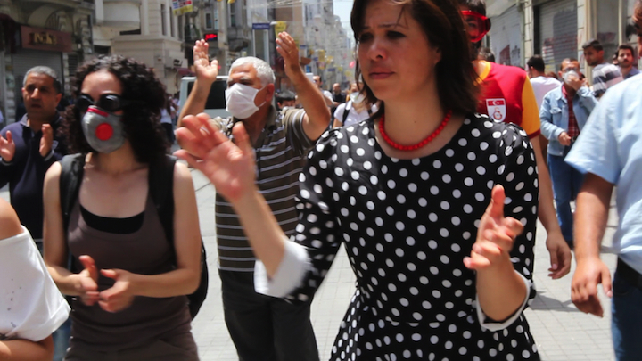
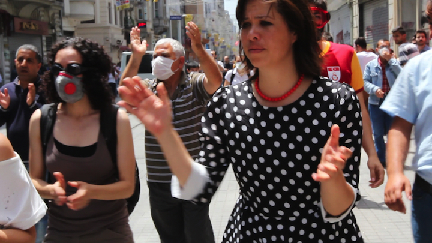
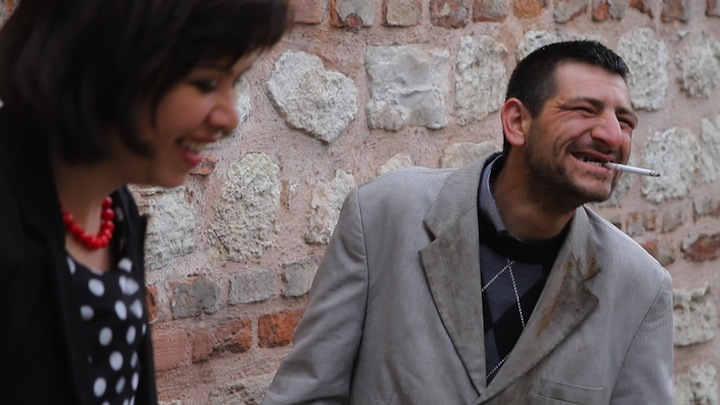
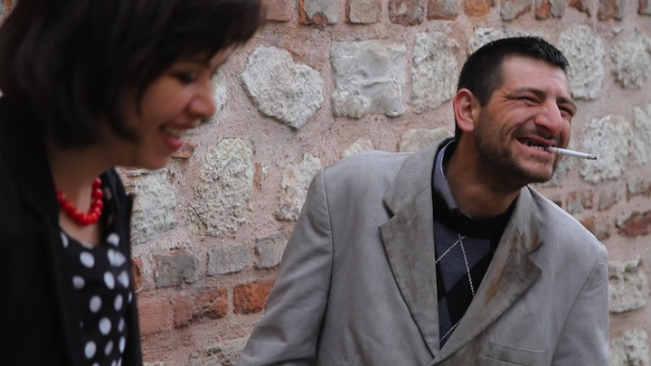

One Million Steps
A tap dancer performs, while elsewhere people run from the tear gas of the police. Two worlds apart - if it wasn’t for an unexpected opening in the floor, right in front of the dancer… She decides to jump, and lands in the middle of the social protests in Istanbul. The dancer witnesses the people’s fight for personal freedom and living space, and takes the opportunity to transform her dance into a statement of solidarity.
Team
In this film I collaborated with the multifaceted Dutch tap dancer Marije Nie. Marije performs with international recording artists like Miriam Overlach, Nguyen Lê, Han Bennink, Mehmet Polat, the Rotterdam Philharmonic Orchestra, and the Beograd Filharmonija and was awarded with the Dutch Jur Naessens Prize for innovation in music. The sound mix of this musical film was made by Niklas Kammertöns (German Film Prize for Pianomania)
Producer (Germany), Director, Scriptwriter
Eva Stotz, ronjafilm
Co-Producer, Choreographer, Main Cast
Marije Nie
Associate Producer Germany
Nadja Smith
Associate Producer Turkey
Ufuk Arica
Director of Photography
Carola Rodriguez Sanchez
Second Camera Istanbul
Onur Baki, Eva Stotz
Screenplay
Eva Stotz
Editor
Gregor Bartsch, Georg Petzold
Sound Design
Turgay Uygur, Reinklang
Sound Mixing
Niklas Kammertöns, Neuton
Music
Timothy Beutler, Meinhard Blum, Said Anzali, KardeşTürküler, Boğaziçi Jazz Choir
Animation
Arzu Saglam
Festivals & Awards
- Best Experimentalfilm 26th BAMBERGER KURZFILMTAGE
- Best Documentary 4th MUMBAI SHORTS INT’L FILM FESTIVAL
- Best Documentary 17th FESTIVAL INTERNATIONAL DU FILM D'AUBAGNE (FIFA)
- Audience Award Best Documentary 13th CINEDANS – DANCE ON SCREEN FESTIVAL EYE, AMSTERDAM
- Juror's Special Prize 3rd GREEN IMAGE FILM FESTIVAL, TOKYO
- Audience Award Best Documentary 2016 39th GRENZLAND-FILMTAGE SELB
- Jury Award 34th INTERNATIONAL FESTIVAL OF FILMS ON ART (FIFA), MONTREAL
- Board of Director’s Award NORTH CAROLINA FILM AWARD FALL 2015
- Official Selection 24th ST. LOUIS INTERNATIONAL FILM FESTIVAL
- Official Selection 27th ISTANBUL INT’L SHORT FILM FESTIVAL
- Official selection 15th SEOUL NEW MEDIA INTERNATIONAL FESTIVAL
- Official selection 3rd WEST NORDIC INTERNATIONAL FILM FESTIVAL
- Official selection 25th INVIDEO - INTERNATIONAL EXHIBITION OF VIDEO ART & CINEMA BEYOND, MILANO
- Official selection 10th MOSCA – CAMBUQUIRA SHORT FILM FESTIVAL, BRAZIL
- Official selection 37th INTERNATIONAL FESTIVAL OF CINEMA UND WOMEN, MILANO
- Official selection 13th LUKSUZ FILM FESTIVAL, SLOVENIA
- Official selection 10th SCENECS THE INTERNATIONAL DEBUT FILM FESTIVAL
- Official selection 21st CUCALORUS FILM FESTIVAL, NC
- Official selection 16th ASIATICA, ENCOUNTERS WITH ASIAN CINEMA, ROME
- Official selection KARAMA HUMAN RIGHTS FILM FESTIVAL, AMMAN
- Official selection 7th ARES FILM & MEDIA FESTIVAL
- Official selection 6th FiLUMS’16 INT’L FILM FESTIVAL, PAKISTAN
- Official selection 9th THIN LINE FILM FESTIVAL, TX
- Special Program 17th BAYREUTHER FILMFEST “KONTRAST”
- Official selection 9th CAIRO INTERNATIONAL WOMEN’S FILM FESTIVAL
- Official selection 6th QUEENS WORLD FILM FESTIVAL, NY
- Official selection 9th GLASGOW SHORT FILM FESTIVAL
- Official selection INTERNATIONAL ETHNOGRAPHIC FILM FESTIVAL OF QUEBEC (FIFEQ)
- Official selection 23. SGUARDI ALTROVE FILM FESTIVAL INTERNAZIONALE, MILANO
- Official selection 9th ONE WORLD ROMANIA INT’L HUMAN RIGHTS DOCUMENTARY FILM FESTIVAL
- Official selection 9th LOIKKA DANCE FILM FESTIVAL, HELSINKI
 

» ... a film that changes your vision and your hearing. «
(Südwestpresse Ulm, C. Reicherter)
» ... this film is refreshing our hopes and opens a window we haven't looked through yet. «
(ilerihaber, İlke Kızmaz)
» One Million Steps presents turkish anguish through tap dance «
(Discover Denton, Logan Holloway)
» Spero che la paura di oggi a Istambul non uccida lo spirito di Gezi «
(IO Donna Milano, Farian Sabahi)
 

One Million Steps
live events
and performance
In order to screen One Million Steps broader than just at film festivals, Eva Stotz and Marije Nie created an event format, which includes dance, live music, and performance - a platform for artistic exchange and critical discussion.
Gezi Memories: October 2015, Berlin, renk Magazin, Blogfabrik, A film premiere and memories of Gezi Protest in 2013
The Berlin Premiere of One Million Steps was combined with a lecture from the book Gezi Anthologies, video art by Erdal Inci and a concert with Marije Nie, Tim Beutler (Electronics), Engin Isik, Deniz Kartal, Özgür Ersoy, Lucas Dols (Contrabass) and Hilary Jeffery (Trombone).
Human Spirit vs. Extremism: December 2015, Amman, Jordan, The Karama Human Rights Filmfestival hosted this dance and film event
The film screening was combined with a dance performance by Ziya Azizi Dervish in Progress and a concert with the Jordanian musicians and Marije Nie.
Campaign Lichtburg: March 2015, Ulm, The end of our crowdfunding campaign is marked by this special performance
Marije Nie together with Mathias Müller (Guitar) and Andreas Usenbenz (Electronics)